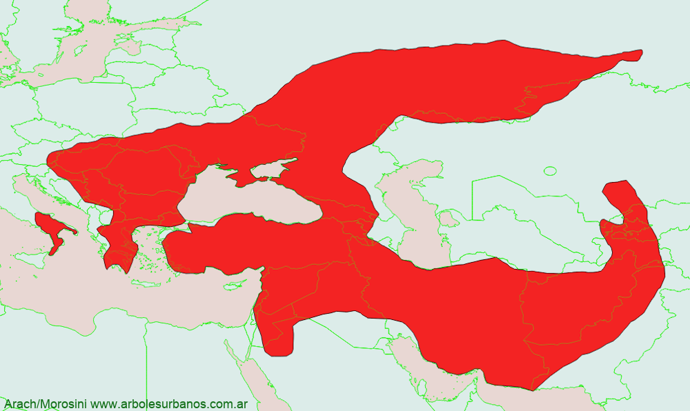

Click en las imágenes para ampliar

{kind=link}
{kind=link}
{kind=link}
{kind=link}
{kind=link}
Almendro
N OMBRE CIENTÍFICO : Prunnus dulcis, Prunnus amigdalina
F AMILIA BOTÁNICA : Rosáceas
O RIGEN : presuntamente es originario de Irán, luego asilvestrado en la región del Cáucaso y dispersado en la cuenca del mar Mediterráneo por los romanos.
D ESCRIPCIÓN GENERAL : Es un árbol caduco de pequeño porte llegando a medir entre 5 o 6 metros de altura, su tronco es con frecuencia tortuoso, de corteza lisa y color verde cuando joven y de color gris amarronado, agrietada y con muchas lenticelas cuando ya es adulto.
HOJAS: Sus hojas son simples, de forma lanceolada y estrecha de entre 7,5 y 13 cm de largo, con borde aserrado o festoneado, su color verde intenso y luego amarrillo y ocre antes de caer.
F LORES : aparecen a mediados o fines del invierno, antes de la aparición de las hojas nuevas, son rosadas o blanquecinas (dependiendo de la variedad). Aparecen solitarias o bien ne grupos de 2 o 4, de entre 3 y 5 cm de diámetro.
F RUTOS : son una drupa de forma oblonga, de color verde arrugados y pubescentes, miden entre 3 y 6 cm de largo, tienen un pericarpio y mesocarpio correosos, que alberga un solo carozo duro de color marrón claro, dentro del cual está la semilla, la almendra propiamente dicha
R EPRODUCCIÓN : se lo puede multiplicar por semillas, en general se utilizan plantas injertadas, a veces en otras especies como el almendro amargo o el duraznero
Usos: Se lo planta tanto como ornamental, como para la producción de almendras, de esta además e para la alimentación se extrae un aceite utilizado en medicina y en cosmética
P ARTICULARIDADES : este árbol es recomendable para jardines de dimensiones reducidas, si se lo va a utilizar para producir fruta, tendrá que asesorarse ya que hay algunas variedades que son autoincompatibles, esto es que no se pueden autopolinizar, en este caso tendrán que tener en las cercanías otro almendro a fin de garantizar la fructificación.